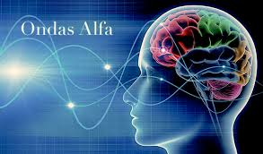
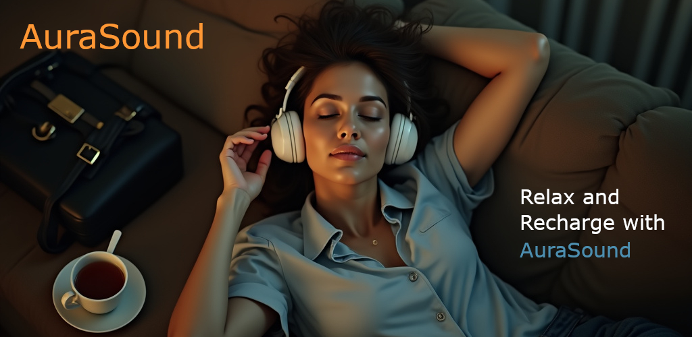

El mal del siglo XXI
Vivimos en una época de cambios acelerados, hiperconectividad constante y altas exigencias personales y laborales. En este contexto, los niveles de ansiedad, estrés y depresión han aumentado dramáticamente, convirtiéndose en los principales desafíos para la salud mental de nuestra era.
La ansiedad es una respuesta biológica ante situaciones percibidas como amenazantes. Sin embargo, cuando se vuelve constante o excesiva, puede bloquear nuestra capacidad de razonar, descansar o disfrutar. El cuerpo vive en estado de alerta, y eso lo desgasta profundamente.
Por su parte, el estrés crónico deteriora el sistema inmunológico, afecta la memoria, la digestión, el sueño y puede derivar en trastornos físicos y emocionales. Cuando sentimos que nunca es suficiente, el estrés nos atrapa.
En muchos casos, estas emociones sostenidas pueden derivar en depresión, un estado que va más allá de la tristeza. Es una sensación de vacío, de desconexión con uno mismo y con el entorno. Ignorar sus señales solo agrava su impacto.
Reconocer lo que sentimos es el primer paso. No estás solo. Existen herramientas simples, como el uso de sonidos relajantes, que pueden ayudarte a calmar la mente, mejorar el sueño y recuperar tu equilibrio emocional.
AuraSound fue diseñada con ese objetivo: ofrecerte un espacio sonoro de calma y contención. No reemplaza a un tratamiento profesional, pero puede ser un refugio diario que te devuelva algo de paz.
Frecuencias Alfa: la puerta a la calma interior
 Las ondas cerebrales alfa son un tipo de patrón eléctrico que emite nuestro cerebro cuando estamos en un estado de relajación profunda pero alerta. Oscilan entre los 8 y 13 Hz y están asociadas con momentos de calma, meditación, introspección y creatividad tranquila. Se producen de forma natural justo antes de dormir o al despertar, cuando la mente está en paz y el cuerpo relajado.
Numerosos estudios en neurociencia han demostrado que al inducir un estado alfa, se logra reducir el ritmo cardíaco, disminuir la ansiedad, mejorar el aprendizaje y activar procesos de reparación celular y recuperación del sistema nervioso. Este estado es clave para restaurar el equilibrio emocional y físico, y favorece la producción de serotonina, conocida como la hormona del bienestar.
Aunque la terminología científica es reciente, muchas culturas ancestrales ya conocían el poder del sonido. En antiguas tradiciones japonesas y chinas, se utilizaban cuencos cantores, tambores y flautas de bambú para inducir estados de meditación y sanación. Estos instrumentos producían sonidos armónicos que, sin saberlo, estimulaban el cerebro en frecuencia alfa.
En la actualidad, es posible replicar estos efectos usando sonidos generados digitalmente que se ajustan a las frecuencias alfa. En AuraSound, hemos incorporado paisajes sonoros que estimulan este estado natural de reposo consciente, ayudando a reducir el estrés y reconectar con tu centro interior.
Estar en estado alfa no solo trae sensación de paz y claridad, sino que activa procesos profundos de autorregulación, descanso neuronal y recuperación energética. Es un acceso directo a la armonía entre cuerpo, mente y espíritu.
Descargá AuraSound
 AuraSound es una aplicación liviana diseñada para ayudarte a encontrar equilibrio y serenidad a través de sonidos cuidadosamente seleccionados en frecuencia alfa. Ha sido desarrollada siguiendo estándares de calidad tanto en el aspecto sonoro como visual, brindando una experiencia inmersiva y reconfortante.
Incluye sesiones guiadas de respiración que complementan los paisajes sonoros, ayudándote a reconectar con tu interior y soltar tensiones. Para lograr la mayor efectividad, se recomienda utilizar auriculares envolventes y elegir un lugar tranquilo donde el cuerpo pueda estar en reposo absoluto.
AuraSound es una aplicación multilingüe pensada para llegar a más personas en todo el mundo. Continuamente se agregarán nuevas funcionalidades y sonidos, de forma gratuita.
Si disfrutás de AuraSound, dejá tu comentario en Google Play y compartila con tus amigos o seres queridos que necesiten un espacio de calma en sus vidas.